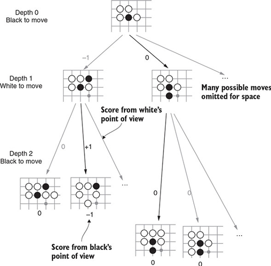
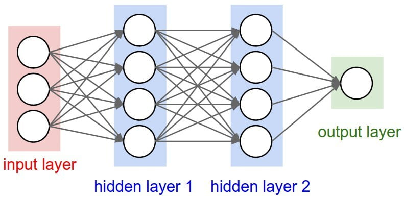
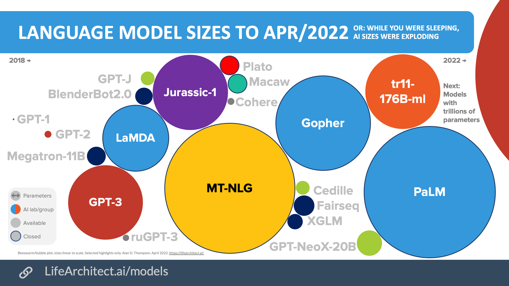

Upcoming: Distinguished Lecture
Don't miss it!
(More about Prof. Cho and his work later in this lecture.)
Learning goals
- Get to know a bit about the instructor and one or more classmates.
- Understand the topics of the course.
- Name an application of AI.
Who am I?
My name is Yuntian Deng. I am from China.
Appointments:
- Assistant Professor, University of Waterloo
- Associate, Harvard CS
- Faculty Affiliate, Vector Institute
Previous:
- Postdoc at AI2 (Prof. Yejin Choi)
- PhD, CS, Harvard University (Profs. Alexander Rush, Stuart Shieber)
- MS, Language Technologies, CMU (Prof. Eric Xing)
- BE, Automation, Tsinghua University (Prof. Jie Zhou)
Research: natural language processing, machine learning
Who are the TAs?
The TAs will monitor Piazza, grade your homework, host TA office hours, and grade the final exam.
- Liliana Hotsko (
lhotsko@) — Piazza Management - Bihui Jin (
b27jin@) - Larry Yinxi Li (
y3395li@) - Yuxuan Li (
y624li@) - Henry Lin (
h293lin@) - Hala Sheta (
hsheta@) - Dake Zhang (
d346zhan@)
Topics in CS 486/686 (1/2)
Introduction to AI and CS486/686
1: Introduction to AI
Search:
2: Uninformed Search
3: Heuristic Search
4: Heuristic Search (continued)
5: Constraint Satisfaction Problems
6: Local Search
Uncertainty Estimation:
7: Probabilities
8: Independence and Bayesian Networks I
9: Independence and Bayesian Networks II
10: Variable Elimination Algorithm
11: Hidden Markov Models I
12: Hidden Markov Models II
Topics in CS 486/686 (2/2)
Markov Decision Process:
13: Decision Theory
14: Markov Decision Processes I
15: Markov Decision Processes II
16: Reinforcement Learning
Machine Learning & Deep Learning:
17: Introduction to Machine Learning
18: Unsupervised Learning
19: Decision Trees
20: Neural Networks I
21: Neural Networks II
22: Neural Networks III
23: Course Recap
What's included in Search
- Learn the generic search algorithm
- Discuss uninformed search algorithms like DFS and BFS
- Discuss heuristic search algorithms like A*
- Understand the complexity and completeness of search algorithms
- Understand constraint satisfaction problems
- Solve CSPs with arc-consistency and backtracking
- Learn about local search algorithms like simulated annealing and genetic algorithms
What's included in Uncertainty Estimation
- Sum Rule, Product Rule, Chain Rule, Bayes' Rule
- Understand random variable independence
- D-separation principle for testing independence
- Construct Bayesian Networks
- Answer queries about Bayesian Networks via the variable elimination algorithm
- Understand Hidden Markov Models
- Forward-Backward algorithm to compute hidden states
What's included in Markov Decision Process
- Decision theory: actions, utility, and expected utility
- Markov Decision Processes to make a sequence of decisions
- Value Iteration algorithm to compute the optimal policy
- Reinforcement Learning (Temporal Difference Learning + Q-Learning)
What's included in Machine Learning
- Supervised vs. unsupervised learning, bias-variance trade-off
- Unsupervised learning (e.g., k-means clustering)
- Decision tree algorithm; learn to construct decision trees
- Basics of neural networks
- Backpropagation algorithm in neural networks
Main Website
- Frequently updated with learning materials and announcements.
- Includes all the deadlines, release dates, slides and notes.
Piazza
Best way to reach me = office hour
Second-best way to reach me = private Piazza post
- Ask questions related to the course
- You're encouraged to answer other students' questions
- We will try to respond in 2 business days
TA Support
If you have questions regarding assignments or learning materials, you can also consult TAs.
Office Hours
- Instructor office hours: TBA
- TA office hours: TBA on Piazza
Assignments
There are 3 assignments — each has a written and programming part.
Written part
- E.g. trace through the algorithm, prove something, analyze results from programming part
- Submit on Learn
Programming part
- Implement functions for algorithms discussed
- Submit code on Learn
- Week 1, week 2, final test setups
Assignments
Each assignment will have roughly 20 days of completion time.
- Assignment 1
- Assignment 2
- Assignment 3
Exam
Final: 2.5 hours, date/time (TBA)
- Every student must attend the final exam, no makeup exam.
- CS 486 students must pass the final exam.
- Final exam will cover all the materials.
Project
Solve a problem with AI (or for AI) and write a report.
- CS 686 students must pass the project to pass the course.
- Optional for CS 486 students (10% bonus).
- Done individually or in groups of up to 3.
CS 686 students — free compute resources for GPUs:
Project
- Topics are not restricted: reinforcement learning, image classification, NLP, HCI, biomedical, etc.
- It does not need to reach publication-level novelty.
- It cannot be trivial, like cloning some code from an existing public GitHub.
- Students can form a team of up to 3 members, but the report must specify the responsibility of each member.
- Proposal due around the middle of the term; final report due after the final exam.
Score Breakdown
- CS486: 30% Assignments, 20% Chat Assignments (with Chrysalis), 50% Final Exam, 10% bonus from Project (optional)
- CS686: 30% Assignments, 30% Project, 40% Final Exam
The Goal of AI
Artificial Intelligence:
- Enable machines to sense, comprehend, act, and learn with human-like levels of intelligence.
- Combined with computer science to solve challenging problems.
- Not confined to methods that are biologically observable.
The History of AI: Alan Turing

Alan Turing: 1912–1954, primarily known for codebreaking in WW2 (see The Imitation Game). Also asked "can machines think?", and proposed the imitation game.
The History of AI: Dartmouth Conference
- During the Dartmouth Conference in the mid-1950s, John McCarthy proposed the term "Artificial Intelligence".
- McCarthy also created Lisp, the standard programming language used in robotics.
The History of AI: the Turing Test
The History of AI: the Turing Test
ELIZA — (1966, Joseph Weizenbaum, Lisp)
ME: Hi ELIZA: How do you do? What brings you to see me? ME: I'm thinking of taking a course in artificial intelligence. ELIZA: Why do you say that? ME: I'm worried about it ELIZA: Are you worried often? ME: when I take AI courses ELIZA: What happened when you take ai courses? ME: I usually spend long nights doing assignments ELIZA: Earlier you said you felt worried? ME: about AI courses ELIZA: Maybe your plans have something to do with this. ME: no ELIZA: Why not? ME: because I think you are a computer ELIZA: Is it because you think I am a computer that you came to me?
Loebner Prize — Turing test competition
- Annual Turing test competition, launched in 1990 by Hugh Loebner.
- Grand prizes ($25,000 text-only / $100,000 text+visual+auditory) were never awarded.
- Competition discontinued after the final 2019 contest (source: Wikipedia, "Loebner Prize").
- Example interaction:
CONFEDERATE: Hello, my name is Sam and I am the human JUDGE: Hi Sam, tell me which is larger, a TV screen or Belgium. CONFEDERATE: Belgium is a little bit larger. JUDGE: Wljso lwjejdo wleje elwjeo wjeol, isn't it? CONFEDERATE: Is that Polish? JUDGE: Which is further away from this apartment, Queens or the Queen of England? CONFEDERATE: If the Queen is visiting Manhattan, she is closer.
Blocks World — SHRDLU — Winograd 1968
- First autonomous physical interaction.
- Blocks world only.
Pick up a big red block OK Grasp the pyramid I DON'T UNDERSTAND WHICH PYRAMID YOU MEAN What does the box contain? THE BLUE PYRAMID AND THE BLUE BLOCK. What is the pyramid supported by? THE BOX. How many blocks are not in the box? FOUR OF THEM
Game Playing

- Game playing is also a very important metric to evaluate intelligence.
- Min-Max game of two players: one wants to maximize the chance of winning, the other aims to minimize it.
- Game playing can be formulated as a search problem with nodes representing the state.
Chess

- Game tree has more than \(10^{100}\) nodes.
- IBM Deep Blue uses lookahead search and a complex evaluation function to predict the outcome.
- In 1997, IBM Deep Blue defeated the world champion Garry Kasparov in a 6-match game.
- Deep Blue: 20 years later (Scientific American, 2022)
Go (Weiqi)

- Game tree has more than \(10^{360}\) nodes — much harder than chess.
- AlphaGo (DeepMind): Silver et al. (2016). Mastering the game of Go with deep neural networks and tree search. Nature, 529(7587), 484–489.
- Deep neural networks; supervised learning; reinforcement learning.
AlphaGo

- AlphaGo combines machine learning and tree search techniques.
- AlphaGo uses Monte-Carlo tree search, guided by a "value network" and a "policy network" (covered in our lectures).
- AlphaGo learns by playing against both humans and itself.
Poker

- Play with uncertainty. Must model opponent(s). Care about long-term payoff.
- Bowling, M., Burch, N., Johanson, M., & Tammelin, O. (2015). Heads-up limit hold'em poker is solved. Science, 347(6218), 145–149.
- Brown, N., & Sandholm, T. (2019). Superhuman AI for multiplayer poker. Science, 365(6456), 885–890.
Atari Games

- Mnih et al. (2013). Playing atari with deep reinforcement learning. arXiv:1312.5602.
- Reinforcement learning; CNN; high-dimensional sensory input. Previous approaches used hand-crafted visual features.
- Outperforms previous approaches; surpasses a human expert on 3/7 Atari 2600 games.
StarCraft II

- Multi-agent problem; imperfect information; large action and state space; delayed credit assignment.
- Vinyals et al. (2019). Grandmaster level in StarCraft II using multi-agent reinforcement learning. Nature, 575(7782), 350–354.
- Video: youtube.com/watch?v=jtlrWblOyP4
AlphaFold

- Synthesize structures of unknown proteins (previously required painstaking months-to-years of human labor).
- Jumper et al. (2021). Highly accurate protein structure prediction with AlphaFold.
- Benefits greatly from the growth of the Protein Data Bank.
- Uses a model called EvoFormer to make structure predictions.
The Surge of Deep Neural Networks

- Old-fashioned ML used decision trees, SVMs, linear regression, and boosting algorithms.
- Neural networks have existed for a while. They really took off with AlexNet (ImageNet Classification with Deep Convolutional Neural Networks).
- Increasing the depth of neural networks to hundreds of layers.
Development of AI Models

- Around 15 years ago, no machine could reliably do language or image recognition at human level. As the chart shows, AI systems steadily caught up and surpassed humans on these benchmarks.
- Since then, benchmarks like MMLU and SuperGLUE have saturated, and the field has moved to harder evaluations (e.g., GPQA Diamond, SWE-bench, ARC-AGI) where progress is still rapid in 2025–2026.
Image Classification

A standard classification problem: categorize an image into 1 of 1000 object classes.
Image Classification

Before 2011, the curve was relatively flat. In 2012, AlexNet was proposed as the first deep neural network to address the long-standing problem, and ImageNet classification is now considered essentially solved.
Image Generation

Supervised Learning (Human Annotation)

Self-Supervised Pre-training

Instead of training on annotated data, the model trains on the crawled web with a self-supervised objective.
Large Language Models

- LLMs have grown rapidly in capability since GPT-3 (2020) and ChatGPT (2022).
- The 2026 frontier includes GPT-5.5 (OpenAI, Apr 2026), Claude Opus 4.7 (Anthropic, Apr 2026), Gemini 3.1 Pro (Google, Feb 2026), and competitive open-weight models like Llama 4, DeepSeek V4, Qwen 3.6, and GLM-5.1.
- Many frontier models use Mixture-of-Experts; exact parameter counts are often undisclosed for closed models.
- Source: buildfastwithai.com — Best AI Models April 2026
What today's LLMs can do
Beyond fluent text generation, modern LLMs have gained several qualitatively new capabilities:
- Reasoning / "thinking" models that spend extra compute at inference time to solve hard math, science, and coding problems (e.g., OpenAI o-series, DeepSeek-R1, Claude with extended thinking).
- Long context windows of 1M+ tokens, enabling whole-codebase or whole-book inputs.
- Multimodality: text, images, audio, and video in a single model.
- Agentic tool use: calling external tools, browsing, and executing code over long horizons (e.g., MCP, Claude Code, ChatGPT agent mode).
Distinguished Lecture: Prof. Kyunghyun Cho (NYU)

Kyunghyun Cho is a Professor of Computer Science and Data Science at New York University and Co-Director of the Global Frontier AI Lab (with Yann LeCun).
He is best known for foundational work in neural sequence modeling:
- The GRU recurrent unit (Cho et al., EMNLP 2014).
- One of the earliest attention mechanisms for neural machine translation (Bahdanau, Cho, Bengio, ICLR 2015) — a direct precursor to today's Transformers and LLMs on the previous slide.
His work directly inspired my own PhD research.
Talk: Tue May 26, 2026, 10:00–11:30 AM, DC 1302.
Homepage: https://kyunghyuncho.me/
Learning goals
- Get to know a bit about the instructor and one or more classmates.
- Understand the topics of the course.
- Name an application of AI.
Reminder — Don't Miss the Distinguished Lecture!
Prof. Kyunghyun Cho (NYU)
Co-inventor of attention (Bahdanau, Cho, Bengio, ICLR 2015) and the GRU
Tuesday, May 26, 2026
10:00–11:30 AM, DC 1302